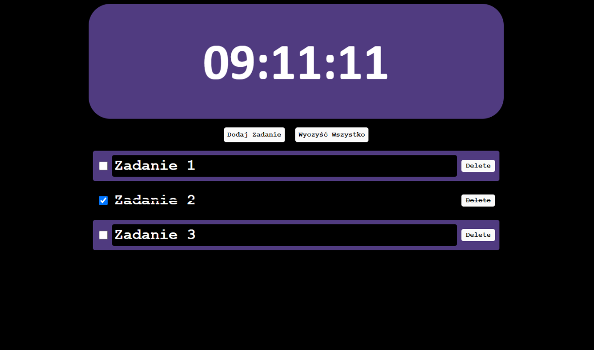

Aplikacja Todo List
Jest to prosta aplikacja Todo List napisana w JavaScript. Umożliwia użytkownikom dodawanie, usuwanie oraz oznaczanie zadań jako ukończone. Aplikacja działa w przeglądarce i oferuje przyjazny interfejs do zarządzania codziennymi zadaniami.
Aby używać tej aplikacji, wystarczy wpisać zadanie w polu tekstowym i kliknąć przycisk "Dodaj". Zadanie pojawi się na liście. Możesz oznaczyć zadanie jako ukończone, klikając na nie, lub usunąć je, klikając przycisk "Usuń".